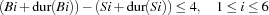
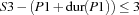
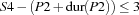
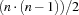

11.2 Constructing a Bridge
The following problem is taken from [Bar83] and is used as a benchmark in the constraint programming community. The problem is to schedule the construction of the bridge shown in Figure 11.10.

Problem Specification
The problem is specified as shown in Figure 11.11. From this table we derive precedence and capacity constraints as in the sections before. We also assume that a resource cannot handle more than one activity at a time. Such a kind of resource is also known as a unary resource.
No | Na. | Description | Dur | Preds | Res |
|---|---|---|---|---|---|
1 | pa | beginning of project | 0 | - | noResource |
2 | a1 | excavation (abutment 1) | 4 | pa | excavator |
3 | a2 | excavation (pillar 1) | 2 | pa | excavator |
4 | a3 | excavation (pillar 2) | 2 | pa | excavator |
5 | a4 | excavation (pillar 3) | 2 | pa | excavator |
6 | a5 | excavation (pillar 4) | 2 | pa | excavator |
7 | a6 | excavation (abutment 2) | 5 | pa | excavator |
8 | p1 | foundation piles 2 | 20 | a3 | pile driver |
9 | p2 | foundation piles 3 | 13 | a4 | pile driver |
10 | ue | erection of temporary housing | 10 | pa | noResource |
11 | s1 | formwork (abutment 1) | 8 | a1 | carpentry |
12 | s2 | formwork (pillar 1) | 4 | a2 | carpentry |
13 | s3 | formwork (pillar 2) | 4 | p1 | carpentry |
14 | s4 | formwork (pillar 3) | 4 | p2 | carpentry |
15 | s5 | formwork (pillar 4) | 4 | a5 | carpentry |
16 | s6 | formwork (abutment 2) | 10 | a6 | carpentry |
17 | b1 | concrete foundation (abutment 1) | 1 | s1 | concrete mixer |
18 | b2 | concrete foundation (pillar 1) | 1 | s2 | concrete mixer |
19 | b3 | concrete foundation (pillar 2) | 1 | s3 | concrete mixer |
20 | b4 | concrete foundation (pillar 3) | 1 | s4 | concrete mixer |
21 | b5 | concrete foundation (pillar 4) | 1 | s5 | concrete mixer |
22 | b6 | concrete foundation (abutment 2) | 1 | s6 | concrete mixer |
23 | ab1 | concrete setting time (abutment 1) | 1 | b1 | noResource |
24 | ab2 | concrete setting time (pillar 1) | 1 | b2 | noResource |
25 | ab3 | concrete setting time (pillar 2) | 1 | b3 | noResource |
26 | ab4 | concrete setting time (pillar 3) | 1 | b4 | noResource |
27 | ab5 | concrete setting time (pillar 4) | 1 | b5 | noResource |
28 | ab6 | concrete setting time (abutment 2) | 1 | b6 | noResource |
29 | m1 | masonry work (abutment 1) | 16 | ab1 | bricklaying |
30 | m2 | masonry work (pillar 1) | 8 | ab2 | bricklaying |
31 | m3 | masonry work (pillar 2) | 8 | ab3 | bricklaying |
32 | m4 | masonry work (pillar 3) | 8 | ab4 | bricklaying |
33 | m5 | masonry work (pillar 4) | 8 | ab5 | bricklaying |
34 | m6 | masonry work (abutment 2) | 20 | ab6 | bricklaying |
35 | l | delivery of the preformed bearers | 2 | - | crane |
36 | t1 | positioning (preformed bearer 1) | 12 | m1, m2, l | crane |
37 | t2 | positioning (preformed bearer 2) | 12 | m2, m3, l | crane |
38 | t3 | positioning (preformed bearer 3) | 12 | m3, m4, l | crane |
39 | t4 | positioning (preformed bearer 4) | 12 | m4, m5, l | crane |
40 | t5 | positioning (preformed bearer 5) | 12 | m5, m6, l | crane |
41 | ua | removal of the temporary housing | 10 | - | noResource |
42 | v1 | filling 1 | 15 | t1 | caterpillar |
43 | v2 | filling 2 | 10 | t5 | caterpillar |
44 | pe | end of project | 0 | t2, t3, t4, v1, v2, ua | noResource |
Figure 11.11: Data for bridge construction.
unary resources
Due to some peculiarities of the problem, we have the following additional constraints.
The time between the completion of the formwork and the completion of the corresponding concrete foundation is at most 4 days.
Between the end of a particular foundation and the beginning of the corresponding formwork can at most 3 days elapse.
The erection of the temporary housing must begin at least six days before each formwork.
The removal of the temporary housing can start at most two days before the end of the last masonry.
The delivery of the preformed bearers occurs exactly 30 days after the beginning of the project.
To deal with the additional constraints we refine the record containing the specification of the problem. We add a field under the feature constraints that contains a procedure parameterized by the records containing the start times and the durations of tasks (see Figure 11.12). This procedure will be applied by the scheduling script.
bridge(tasks:<Bridge task specification>
constraints:
proc {$ Start Dur}
{ForAll [s1#b1 s2#b2 s3#b3 s4#b4 s5#b5 s6#b6]
proc {$ A#B}
(Start.B + Dur.B) - (Start.A + Dur.A) =<: 4
end}
{ForAll [a1#s1 a2#s2 a5#s5 a6#s6 p1#s3 p2#s4]
proc {$ A#B}
Start.B - (Start.A + Dur.A) =<: 3
end}
{ForAll [s1 s2 s3 s4 s5 s6]
proc {$ A}
Start. A >=: Start.ue + 6
end}
{ForAll [m1 m2 m3 m4 m5 m6]
proc {$ A}
(Start.A + Dur.A) - 2 =<: Start.ua
end}
Start.l =: Start.pa + 30
Start.pa = 0
end)
Figure 11.12: Specification for bridge construction.
Model
A trivial upper bound of the makespan is the sum of all durations of the tasks. For the bridge construction problem we have 271 as the upper bound. We adopt the model of the house problem including capacity constraints. The additional constraints can be modeled with propagators for the following constraints over the problem variables ( denotes the duration of a task  ).
).






Distribution Strategy
We first try the distribution strategy of Section 11.1.2, i. e. the first-fail strategy. The first solution of the problem is found with 97949 choice nodes and has a makespan of 133. After 500000 choice nodes no better solution is found. This is very unsatisfactory if we know that the optimal makespan is 104.
Thus, we try the distributor described in Section 11.1.3, i. e. the naive serializer. Now we find the first solution with makespan 120 with only 77 choice nodes. With 95 choice nodes we find a solution with makespan 112. After 500000 choice nodes no better solution is found.
In order to solve the problem we combine the ideas of first-fail and of serializers. The idea behind first-fail is to distribute first with a variable which has the smallest domain. This variable should occur in many constraints and should lead to much constraint propagation. The variable with the smallest domain acts as a bottleneck for the problem. This idea can be transferred to scheduling problems. A simple criterion for a resource to be a bottleneck is the sum of the durations of tasks to be scheduled on that resource. Hence, we will serialize first the tasks on a resource where the sum of durations is maximal.
Script
fun {Compile Spec Capacity Serializer}<Extract additional constraints>
TaskSpec = Spec.tasks
Constraints =
Dur = {GetDur TaskSpec}
TasksOnRes = {GetTasksOnResource TaskSpec}
in
proc {$ Start}
Start = {GetStart TaskSpec}
{Constraints Start Dur}
{Capacity TasksOnRes Start Dur}
{Serializer TasksOnRes Start Dur}
end
end
Figure 11.13: A scheduling compiler for the bridge problem.
Figure 11.13 shows the scheduling we will employ for the remaining problems. The variable Constraints refers to a binary procedure possibly containing additional constraints for a scheduling problem, it is computed as follows:
- <Extract additional constraints>=
if {HasFeature Spec constraints} then
Spec.constraints
else
proc {$ _ _}
skip
end
end
Note that we have parameterized the scheduling compiler with procedures to post the capacity constraints and the serializer. This makes it straightforward to solve the bridge problem with stronger techniques.
The procedure DistributedSorted orders the tasks on resources according to our bottleneck criterion (see Figure 11.14).
proc {DistributeSorted TasksOnRes Start Dur}
fun {DurOnRes Ts}
{FoldL Ts fun {$ D T}
D+Dur.T
end 0}
end
in
{ForAll {Sort {Record.toList TasksOnRes}
fun {$ Ts1 Ts2}
{DurOnRes Ts1} > {DurOnRes Ts2}
end}
proc {$ Ts}
{ForAllTail Ts
proc {$ T1|Tr}
{ForAll Tr
proc {$ T2}
choice Start.T1 + Dur.T1 =<: Start.T2
[] Start.T2 + Dur.T2 =<: Start.T1
end
end}
end}
end}
end
Figure 11.14: Serializer that orders tasks by bottleneck criterion.
The optimal solution can be found by
{ExploreBest {Compile Bridge
Schedule.serializedDisj
DistributeSorted}
Earlier}
The full search tree consists of 1268 choice nodes and 8 solution nodes (see Figure 11.15).

The optimal solution can be visualized by a kind of Gantt-chart (see Figure 11.16). The makespan of the schedule (104 in this case) is indicated by a dashed line. Rectangles denote tasks. The left border of the rectangle indicates the start time of the task and the width of the rectangle indicates the duration of the task. Tasks scheduled on the same resource have the same texture.

The way we can solve scheduling problems by now seems to be satisfactory. But the current approach has two major flaws. First, the propagation of capacity constraint is rather weak. If we want to solve more demanding scheduling problems (like some benchmark problems from Operations Research) we need stronger propagation. Second, the bottleneck criterion of the serializer is rather coarse. We need more subtle techniques to solve more demanding problems. Furthermore, we need  ordering decisions for  tasks on the same resource which may result in deep search trees. This is not feasible for larger problems. Both problems will be solved in forthcoming sections.
tasks on the same resource which may result in deep search trees. This is not feasible for larger problems. Both problems will be solved in forthcoming sections.